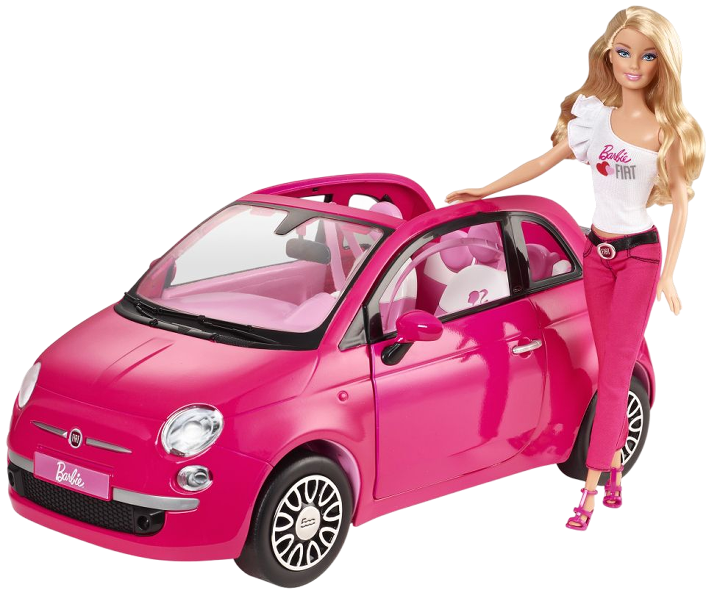
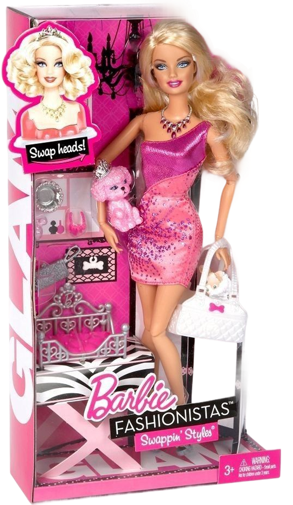

1945-1980 - L'ESPLOSIONE DELLA PLASTICA
BARBIE
Il 9 marzo 1959, alla Fiera del Giocattolo di New York, fece il suo debutto una bambola destinata a cambiare per sempre l’industria del gioco: Barbie (nome completo Barbara Millicent Roberts). Creata da Ruth Handler, co-fondatrice della Mattel, Barbie ruppe lo schema della "bambola-neonato" per offrire alle bambine un modello di donna adulta, indipendente e proiettata nel futuro.
UNA RIVOLUZIONE DI PLASTICA
L’ispirazione venne a Ruth osservando sua figlia Barbara giocare con ritagli di carta, dando loro ruoli da adulta.
- Il look originario: La prima Barbie indossava un costume da bagno a righe bianche e nere, aveva un elegante "ponytail" (coda di cavallo) e uno sguardo laterale malizioso.
- Addio al ruolo di Mamma: Prima di lei, le bambole servivano a insegnare alle bambine come essere madri (accudimento). Con Barbie, il gioco diventò proiezione di sé: le bambine non erano più "mamme", ma "erano" Barbie, una donna con una carriera, una casa e un guardaroba infinito.


"I CAN BE"
Tra gli anni '60 e '70, Barbie iniziò a riflettere i cambiamenti della società:
- Le carriere: Molto prima che fosse comune nella realtà, Barbie fu astronoma (1965, quattro anni prima dello sbarco sulla Luna), chirurgo, manager e pilota di linea. Lo slogan era chiaro: "Tu puoi essere tutto ciò che desideri".
- L'evoluzione estetica: Nel 1971 arrivò la celebre Malibu Barbie: lo sguardo divenne frontale, la pelle abbronzata e il sorriso più aperto, incarnando perfettamente l'ideale solare e libero degli anni '70.
- Diversità: In questo periodo iniziarono ad apparire le prime amiche di etnie diverse (come Christie nel 1968), segnando i primi passi verso una rappresentazione più inclusiva del mondo.

UN MONDO DI ACCESSORI
Barbie non era sola. Il suo universo si espanse rapidamente con il fidanzato Ken (1961), la Dreamhouse (la casa dei sogni) e una quantità incredibile di vestiti firmati dai più grandi designer, rendendola la prima vera "influencer" della storia, decenni prima dei social media.
